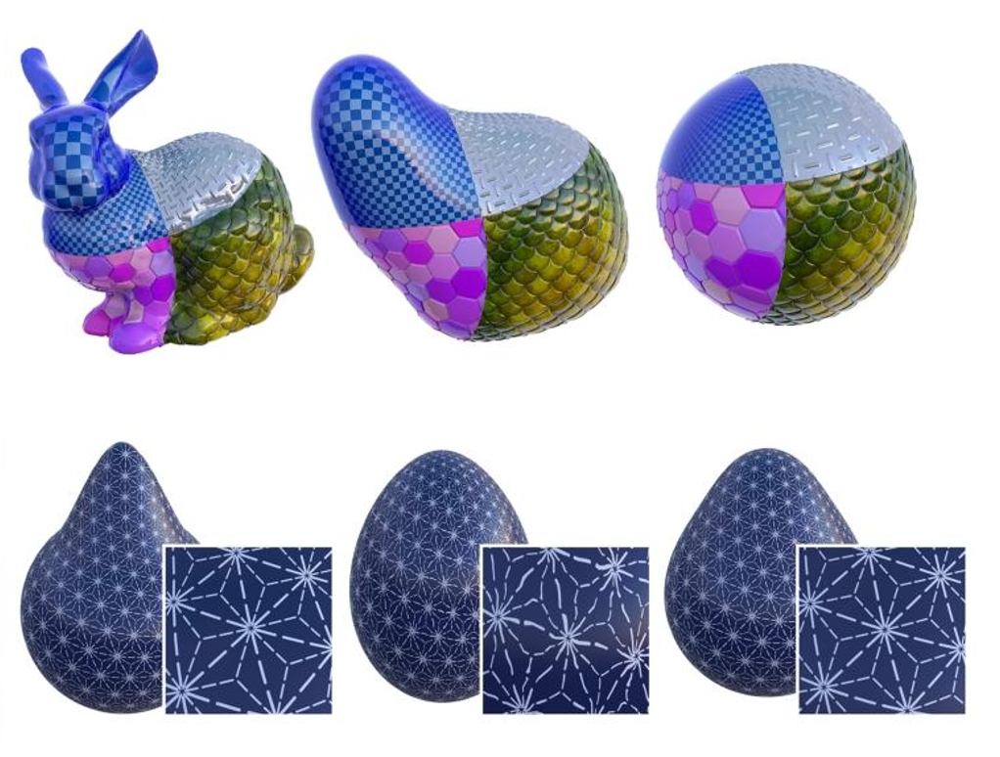

Mean Curvature Flow using PWoS

Overview
In this project, I researched mainstream mean curvature flow methods and attempted to implement mean curvature flow in Houdini using the Penetration-free Walk on Spheres (PWoS) approach.
Due to the high level of confidentiality surrounding this ongoing project, only a high-level summary and thumbnail can be disclosed at this time.